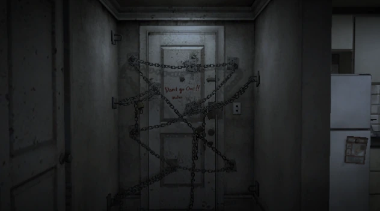

Download
Coming December 2026
I’ll post the first build here in with instructions for installing it.
Join me on Discord for the latest Sacrament Edition updates. Got an idea for the game? Share it in the suggestions forum. I’d love to hear it.

Before you play
Which version is this for?
I’m using the Windows GOG edition of Silent Hill 4: The Room for development. Once I’ve finished testing, I’ll list the supported versions in the release notes.
Do I need the original game?
Yes. You’ll need a copy of Silent Hill 4 for PC. You can find the game on GOG.
When does Sacrament Edition come out?
Sometime in .